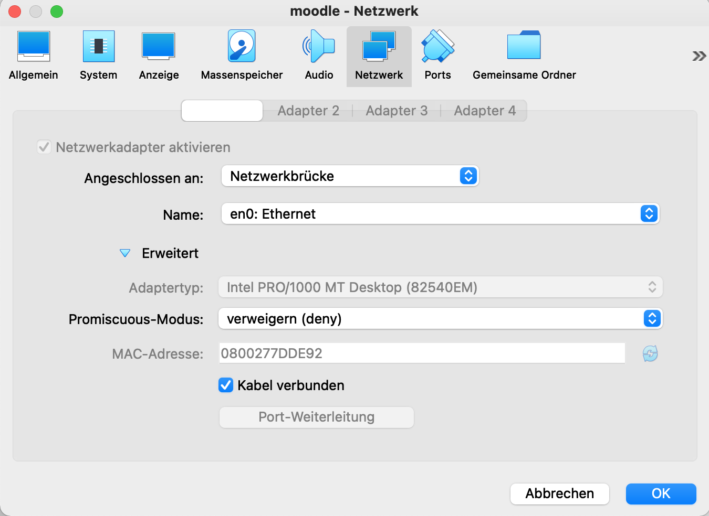
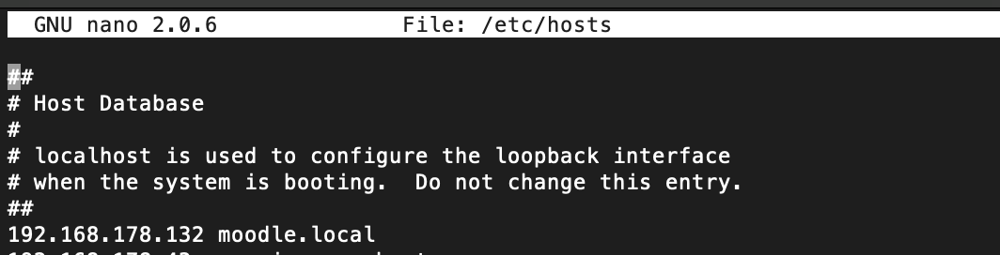

Moodle Server mit Ubuntu 20 LTS und Iomad
Ubuntu Server-Image herunterladen
https://releases.ubuntu.com/20.04/
Virtualbox mit dem Ubuntu Image einrichten
Netzwerkbrücke aktivieren

IP-Adresse ermitteln
ifconfig -> 192.168.178.132
Auf dem Mac (oder PC) die Auflösung des Hosts verknüpfen
auf dem Mac sudo nano /etc/hosts die IP eintragen und moodle.local zuweisen:

Moodle Server auf Virtualbox vorbereiten
sudo -iwechselt auf root
SSH Zugriff ermöglichen
Allow SSH root login on Ubuntu 20.04 Focal Fossa Linux
Shellbefehle zur Installation:
sudo apt update && apt upgrade -y
apt install mariadb-server
sudo apt install apache2 libapache2-mod-fcgid
sudo apt install php php-cli php-fpm php-json php-common php-mysql php-zip php-gd php-mbstring php-curl php-xml php-pear php-bcmath php-intl php-xmlrpc php-soap
a2enconf php7.4-fpm
sudo a2enmod actions fcgid alias proxy_fcgi setenvif
a2dismod php7.4
a2dismod mpm_prefork
a2dismod mpm_worker
a2enmod mpm_event
systemctl restart php7.4-fpm apache2
anlegen: /etc/apache2/sites-available/moodle.conf
############################
<VirtualHost *:80>
ServerName moodle.local
ServerAdmin webmaster@localhost
DocumentRoot /var/www/moodle
<FilesMatch \.php$>
SetHandler "proxy:unix:/var/run/php/php7.4-fpm.sock|fcgi://localhost/"
</FilesMatch>
ErrorLog ${APACHE_LOG_DIR}/error.log
CustomLog ${APACHE_LOG_DIR}/access.log combined
</VirtualHost>
####################################################################
Weitere Shellbefehle zur Installation:
a2ensite moodle.conf
systemctl reload apache2
mkdir /var/www/moodle
echo '<?php phpinfo(); ?>' > /var/www/moodle/info.php
host eintrag hinzufügen: “192.168.178.xxx moodle.local”
192.168.178.xxx moodle.local 192.168.178.xxx www.moodle.local
im Browser öffnen: http://moodle.local/info.php
maschine speichern und klonen
Anschließend IOMAD moodle installieren:
https://www.iomad.org/wp-content/uploads/2021/03/Iomad-Installation-Guide.pdf
Datenbank für moodle erzeugen via SSH:
mysql
CREATE DATABASE moodledb;
CREATE USER 'moodleowner'@'localhost' IDENTIFIED BY '$mdb2passwd';
GRANT SELECT, INSERT, UPDATE, DELETE, CREATE, INDEX, DROP, ALTER, CREATE TEMPORARY TABLES, LOCK TABLES ON moodledb.* TO 'moodleowner'@'localhost';
GRANT FILE ON *.* TO 'moodleowner'@'localhost';
quit
Installation iomad
cd /var/www/moodle
git clone https://github.com/iomad/iomad.git
cd iomad
git checkout -b myiomad origin/IOMAD_310_STABLE
mkdir /var/www/moodledata && chmod 777 /var/www/moodledata
ändern!!!: /etc/apache2/sites-available/moodle.conf -> DocumentRoot /var/www/moodle/iomad
systemctl restart php7.4-fpm apache2
http://moodle.local aufrufen und config.php Datei mit Hilfe des Assistenten generieren lassen

ändern!!!: /moodle entfernen
config.php
<?php // Moodle configuration file
unset($CFG);
global $CFG;
$CFG = new stdClass();
$CFG->dbtype = 'mariadb';
$CFG->dblibrary = 'native';
$CFG->dbhost = 'localhost';
$CFG->dbname = 'moodledb';
$CFG->dbuser = 'moodleowner';
$CFG->dbpass = '$mdb2passwd';
$CFG->prefix = 'mdl_';
$CFG->dboptions = array (
'dbpersist' => 0,
'dbport' => '',
'dbsocket' => '',
'dbcollation' => 'utf8mb4_general_ci',
);
$CFG->wwwroot = 'http://moodle.local';
$CFG->dataroot = '/var/www/moodledata';
$CFG->admin = 'admin';
$CFG->directorypermissions = 0777;
require_once(__DIR__ . '/lib/setup.php');
// There is no php closing tag in this file,
// it is intentional because it prevents trailing whitespace problems!